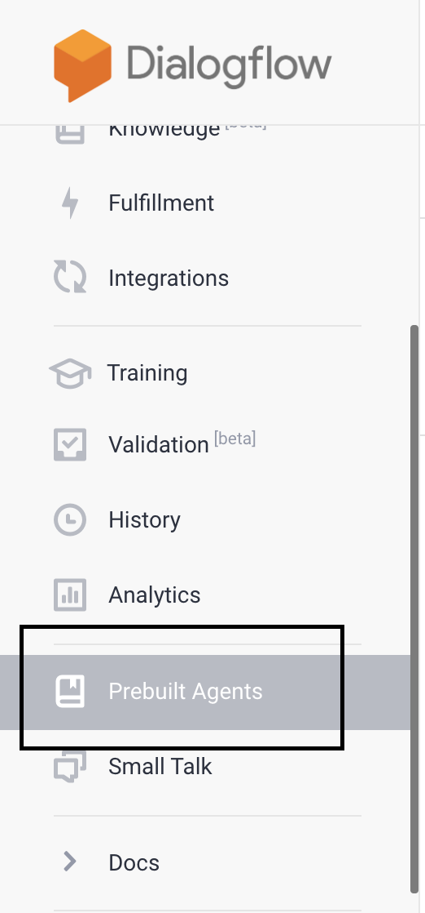
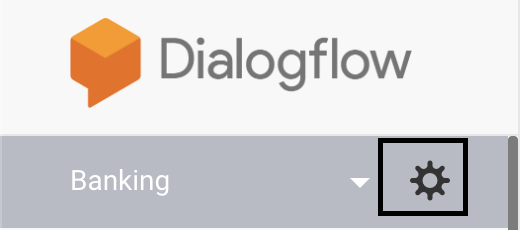
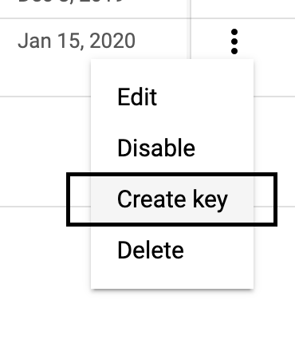
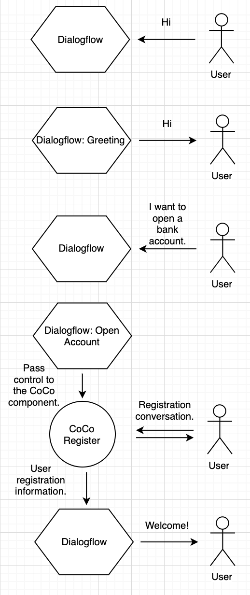
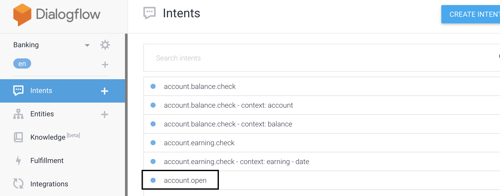

Calling a CoCo from Dialogflow (Externally)
In the following tutorial we'll build a banking bot, using Dialogflow banking prebuilt agent and CoCo the 'Register' component from the CoCo Marketplace. I'll guide you thorough the whole process, including the implementation of the CoCo 'Register' component.
Setup Prebuilt Bot On Dialogflow:
- Create a Dialogflow account.
- Go to the prebuilt agents menu: 
- Choose banking agent:

- Import banking agent:


Authentication With Dialogflow(Service Account Key):
- Extract agent service account key: Go to agent settings.

Go to service accounts:

Generate JSON key:

- Place it in code sample directory as service_accout.json:

Code Sample Overview:
We'll use a Flask application to expose our bot throut an API. For communication with Dialogflow we'll use Dialogflow SDK and for communication with the CoCo component we'll use CoCo SDK.
Code to code sample repository: https://github.com/ConversationalComponents/webinar/tree/master/py
Flow:

Global Variable current_comp:
MAIN_COMP = "default" # Current component on which the session is running. current_comp = MAIN_COMP
The current_comp global variable will be "default" when the conversation is controlled by Dialogflow. When the control is passed to a CoCo component the value of the current_comp variable will be the CoCo component ID which is in control of the conversation right now.
CoCo And Dialogflow Access Functions:
Dialogflow and CoCo request wrapped with process functions.
Let's take a look at the process_dialogflow function:
def process_dialogflow(session_id, text, language_code="en"): """ Returns bot output for user input. Using the same `session_id` between requests allows continuation of the conversation. Arguments: session_id (string): Current session ID. text (string): User input. language_code (string): Context language. Returns: Return tuple intent_name, bot_output (tuple). """ session = session_client.session_path(project_id, session_id) text_input = dialogflow.types.TextInput(text=text, language_code=language_code) query_input = dialogflow.types.QueryInput(text=text_input) response = session_client.detect_intent(session=session, query_input=query_input) return response.query_result.intent.display_name, response.query_result.fulfillment_text
The function receives the session_id and user input then returns intent display name and response text.
And there is the process_coco function:
def process_coco(component_id, session_id, input_text): """ Process user input at a coco component. Arguments: component_id (string): Target component ID. session_id (string): Target session ID. input_text (string): User input text. Returns: CoCo component output. (string) """ component = ConversationalComponent(component_id) return component(session_id=session_id, user_input=input_text)
The function receives CoCo component ID, session ID and user input. The answer will be the component output.
/input Endpoint:
At the our app.py file we will implement /input endpoint, which will receive
user_input at the payload process the input and return bot response.(Will be
implemented at the "implement Component In Conversation Flow" topic.)
Choose And Add Component:
- Access marketplace: https://marketplace.conversationalcomponents.com/
- Choose the 'Register' component:

- Add Component:

Implement Component In Conversation Flow:
@app.route("/input", methods=["POST"]) def get_input(): global current_comp request_data = request.get_json() or {} user_input = request_data.get("user_input")
Send user input to Dialogflow.
# Get response from DialogFlow for user input. intent_name, bot_output = process_dialogflow(session_id=CURRENT_SESSION_ID, text=user_input)
Choose a relevant intent which will trigger the control pass to a CoCo component:

The relevant intent for registration is "account.open".
# If catch intent, give control to CoCo component. if intent_name == "account.open": current_comp = "register_vp3" if current_comp == "register_vp3": # Fetch response from CoCo if intent catch. coco_response = process_coco(component_id="register_vp3", session_id=CURRENT_SESSION_ID, input_text=user_input)
When component is done, pass the conversation control back to Dialogflow:
# If component done, return the control to the main flow. if coco_response.component_done: current_comp = MAIN_COMP bot_output = coco_response.response return jsonify({"response": bot_output}), 200, {}
Run And Test The Bot:
pip install -r requirements.txt
flask run
try the bot at 127.0.0.1:5000